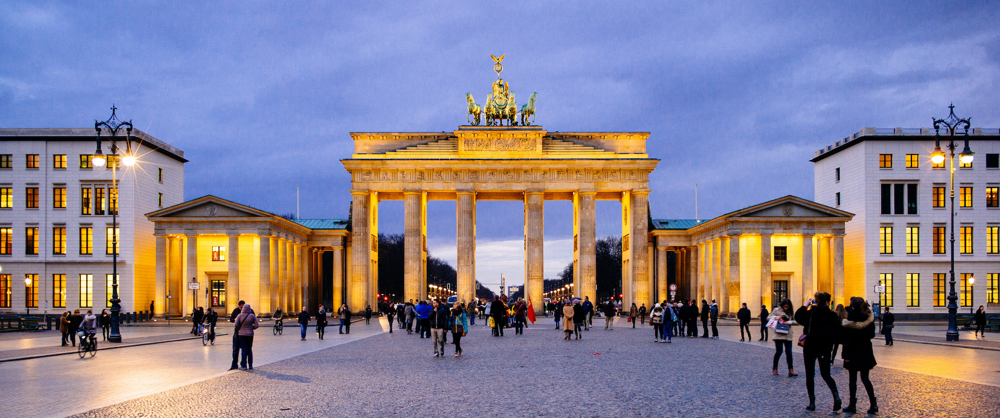

Impressions: Germany
February 2014
Munich
First impressions.
Marienplatz.
Afternoon, um, beer.
Dianatempel in Hofgarten.
Hofgarten sunset.
Signature “four cylinders” tower at BMW headquarters.
BMW Isetta: a micro car with only one door—in the front.
Subway station after dark.
Cliché? Maybe. Delicious? Definitely.
Frankfurt
Somewhere between Munich and Frankfurt.
Gentle.
Framed.
 Knock knock.
Sharing a moment.
Knock knock.
Sharing a moment.
Frankfurt Central Station.
A walk in the woods.
Home of Leica, I. Eisenmarkt, Wetzlar.
Home of Leica, II. Domplatz, Wetzlar.
Berlin

Brandenburg Gate.
Reichstag building.
To the German People.
Berlinische Galerie.
Holocaust Memorial.
East Side Gallery.
“Curriculum vitae.”
View from the Topography of Terror.
Free.
Remember.
Onward.